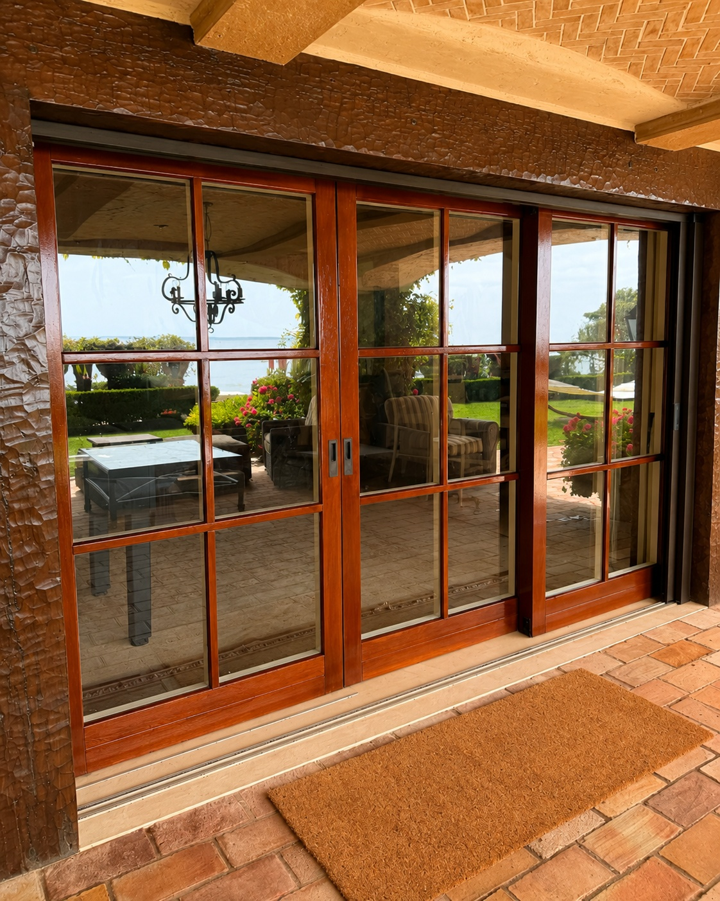

Windows and Doors for Replacements, Remodels and New Projects
Some customers already know the exact product they want. Others are starting with an opening that needs to be replaced, a room they want to improve, or a door that no longer works well.
What We Help You With
Visible Windows & Doors can help review the project, discuss suitable window and door options, confirm measurements, and coordinate the product with installation. We work with a range of window, door, and screen systems, including standard residential products, larger sliding and folding doors, and select European systems.

Window Options for Different Types of Homes and Projects
The right window depends on the opening, the way the room is used, the exterior conditions, and how you want the window to operate.
We can help review replacement and new-construction window options, including sliding, casement, fixed, picture, and other configurations. We also consider glass, frame material, finish, hardware, ventilation, maintenance, and installation requirements before a product is ordered.
Entry, Patio and Sliding Door Options
Doors affect more than the appearance of a home. They also affect access, ventilation, security, weather protection, and the way indoor and outdoor spaces connect.
Visible can help with entry doors, patio doors, standard sliding doors, folding doors, multi-panel systems, and larger glass doors. We review the opening and installation conditions before recommending a product.


Screen Options for Windows, Patio Doors and Wider Openings
Screen needs vary depending on the window or door. Some projects need a standard sliding screen. Others may need a retractable, pull-down, or custom screen that works with a folding or multi-panel door.
We can help review the opening, determine which screen styles may work, take measurements, coordinate the screen with the window or door, and provide installation or service.
- Sliding screens
- Retractable screens
- Pull-down screens where offered
- Screens for folding and multi-panel doors
- Mesh replacement and track or hardware service
Experience With European Window and Door Systems
European window and door systems can use different hardware, operating methods, profiles, and installation details than many standard residential products.
Visible has experience working with European-style systems and can assist with product review, installation, adjustment, repair, and maintenance where applicable.
We also service existing Albertini windows and doors. Albertini is a service and maintenance specialty for us — see our Service & Maintenance page for details, and confirm current product availability directly with us.

Help Choosing the Right Product
Product selection should begin with the project itself. We review the size and condition of the opening, how the window or door needs to operate, the surrounding construction, exposure to weather, screen needs, hardware, glass, finish, and long-term service requirements.
When plans or photographs are available, customers may send them before the first conversation.
How the Sales Process Works
Tell Us About the Project
Send photographs, plans, measurements, or a description of what needs to be replaced.
Review the Opening
We discuss the opening, product type, operation, installation conditions, and any concerns with the existing window or door.
Confirm Measurements
Measurements and installation requirements are confirmed before the product is ordered.
Review Product Options
We discuss suitable products and the differences that matter for the project.
Ordering and Scheduling
Once the product and scope are approved, ordering and installation are coordinated.
Installation and Final Adjustment
The product is installed, adjusted, tested, and reviewed before completion.
Questions We Hear All the Time
Yes. We handle both the product and the installation, which keeps recommendations grounded in what actually works once it's in the opening.
Yes. Single-opening replacements are common work for us, not an exception.
Yes. We also help with full-home window and door packages, remodels, and new construction.
Yes. If plans are available, send them over and we'll review openings, sizes, and product notes before the first conversation.
Yes, including standard sliding doors, multi-slide, lift-and-slide, and bifold systems.
Yes. We help review screen options for windows, patio doors, and wider or folding openings.
Yes, we have experience with European-style window and door systems and can advise on whether that direction fits a given project.
Visible provides service and maintenance for existing Albertini windows and doors. Current product availability should be confirmed directly with the company.
In most cases, yes. Repair options depend on the condition of the product and part availability, which we confirm during inspection.
Tell Us About Your Window or Door Project
Send us a few details about the opening, the product you are considering, or the problem you are trying to solve. Photographs or plans are helpful when available.